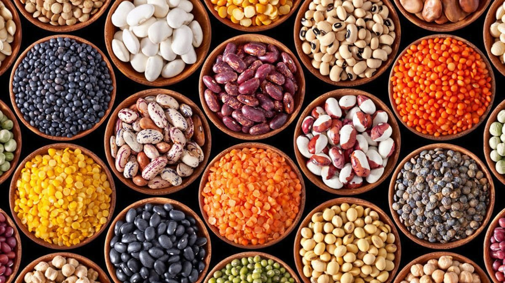

Verduras
Frutas y bayas
Legumbres y cereales
Alimentos bajos en calorías
Verduras
Son ricas en vitaminas y minerales esenciales y contienen mucha fibra.
Frutas y bayas
Actúan como excelentes catalizadores para la descomposición de la grasa corporal.

Legumbres y cereales
Son bajos en grasas, ricos en nutrientes.